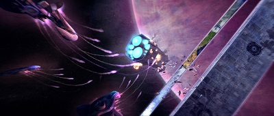

Timeline
This is How it all Begains
The Human-Forerunner War
The Forerunner-Flood War
The Formation of the Covenant
The Rise of Humanity
The Human-Covenant War
The Fall of Reach
The Discovery of Halo
The Great Schism
One Final Effort
The Awakening
Return of the Forerunners
From the Ashes of New Phoenix
The Reclamation
This is How it all Begains - Around 15,000,000 BC, an ancient extragalactic race known as the Precursors seeded the galaxy with life, ultimately leading to the creation of the Forerunners, human, and other intelligent species. By 10,000,000 BC, the Forerunners were tested to see if they were worthy to uphold the Precursors' Mantle of Responsibility, a belief in which the most advanced species should be the caretakers and keepers of peace to all civilizations within the galaxy. They failed and Precursors choose humanity to be the new inheritor to the Mantle as they set forth plans of wipe out the Forerunners. The Forerunners learned of the Precursors' plans and began a war against driving the Precursors out of the galaxy with the Forerunners believing the Precursors were extinct.
The Human-Forerunner War - In the aftermath of Forerunner-Precursor War the galaxy was split into two: the Forerunner Ecumene and the Human-San'Shyuum alliance. During the year 107,445 BC, the humans find crashed vessels that contain an organic powder. They and San'Shyuum administered the powder to animal known as the Pheru which made the creatures more docile. Unbeknownst to them the powder was actually the corrupted remains of the Precursors, who reduce themselves into powder form with plans to regenerate themselves later on in a last ditch effort to save their kind from extinction from the Forerunner wrath, and was altering the Pheru's genetic makeup. Centuries later, the Pheru mutated and cannibalize each other spreading the infection to the humans and San'Shyuum creating a race of space zombies called the Flood. The Flood infection spread to hundreds of worlds and the humanity begins an all-out war to wipe out the Flood from the face of creation. When the humans entered into Forerunner space in order to contain the Flood infection, the Forerunner view this as an act of aggression and declares war with Human-San'Shyuum alliance. In 106,445 BC, the Human-Forerunner War ended with the Forerunner emerging victorious. The San'Shyuum surrendered, the humans were relocated to Earth with their civilization being regressed back to the Stone Age, and all records of the Flood existence where eased with the Forerunner believing that the parasite was a myth.
The Forerunner-Flood War - In 97,745 BC, the Flood returned to the galaxy bring with it a three-century-long conflict with the Forerunner Ecumene. It was the bloodiest in the galaxy's history as entire worlds were lost in hours, the most advanced artificial intelligence falling to the space zombies' control, and even turning willing and unwilling living being into weapons to stop the Flood's advance. After a thousand plans were tried and failed, the Forerunners created seven ringworld superweapons called Halo in order to starve the Flood to death by removing its food, every living being in the galaxy. In 97,445 BC, the Halo array fired wiping out the Flood and every living being in the galaxy including the Forerunners. After reseeding the galaxy with the life that was saved, the remaining Forerunners left the galaxy to never be seen again.
 The Formation of the Covenant - In 938 BC, the San'Shyuum encounter an alien race known as the Sangheili on the frontier world of Ulgethon. The Sangheili executed the San 'Shyuum delegation that were sent to make contact with the Sangheili thus started the War of Beginnings. The War of Beginnings ended in 852 BC with San'Shyuum creating an alliance with Sangheili called the Covenant. For over three thousand years, the Covenant conquered many alien species in their quest of finding Forerunner artifacts in to locate and activate the Halo rings to complete The Great Journey, a regions belief that is the very foundation of the Covenant Empire in which the activation of the Halo array will transcend its believers into gods.
The Formation of the Covenant - In 938 BC, the San'Shyuum encounter an alien race known as the Sangheili on the frontier world of Ulgethon. The Sangheili executed the San 'Shyuum delegation that were sent to make contact with the Sangheili thus started the War of Beginnings. The War of Beginnings ended in 852 BC with San'Shyuum creating an alliance with Sangheili called the Covenant. For over three thousand years, the Covenant conquered many alien species in their quest of finding Forerunner artifacts in to locate and activate the Halo rings to complete The Great Journey, a regions belief that is the very foundation of the Covenant Empire in which the activation of the Halo array will transcend its believers into gods.
The Rise of Humanity - In 2162 AD, after years of overpopulation and open rebellion across Earth and its colonies in the Sol System, the United Nations Space Command (UNSC) was form to stop the rebellions. In 2291 AD, humanity discovers faster than light travel in the form of the Slipspace travel thanks to the development of the Shaw-Fujikawa Slipspace Drive. By 2492 AD, humanity colonized over 800 worlds forming the Inner and Outer Colonies, but tensions began to brew between the two which lead to the rise of the Insurrectionists rebel movement. Fearing the risk of open civil war between the colonies, the UNSC begins an abduction of 150 children from the colonies in 2517 AD in order to have suitable candidates for the Spartan II super solider program to ease the tensions. By 2525, only 33 candidates survived the augmentation procedures with the rest either being physically deformed to perform active combat roles or dead.
The Human-Covenant War - In the year 2525 AD, the human farming world of Harvest lost contact with the UNSC. A fleet of ships are sent but found the planet reduced to glass with an alien ship in orbit. The alien ship destroyed all but one as they let it return to UNSC space to deliver the message that the aliens call themselves the Covenant and they have declared holy war against all of humanity. For 28 years, the UNSC and the surviving Spartan II candidates engage in ground and space combat against Covenant forces. Despite a handful of victories, humanity was losing the war and face extinction as the Covenant pushed their way into UNSC space to find Earth and burning every human world in their way.
The Fall of Reach - After the UNSC's victory at the Sigma Octanus IV in July of 2552, the Covenant send a spy probe to follow the UNSC ships which led to the fortress world of Reach, humanity's last line of defense before Earth. A month later the Covenant arrive to Reach with a fleet of over 300 ships. Within three hours, the planet was lost as most UNSC and Spartan forces were destroyed in battle. As the Covenant plasma bombard the planet's surface, the UNSC Pillar of Autumn makes a random Slipspace jump and escape Reach with last surviving Spartan II super solider: Master Chief John-117.
The Discovery of Halo - In September of 2552, the UNSC Pillar of Autumn and the Covenant fleet from Reach arrive to the location of Halo Installation 04. The two force land on surface and fought to control it. The Covenant breach a Flood research facility and release the parasite. The ring, Flood outbreak, and the Covenant fleet were destroyed when Master Chief overloaded the Pillar of Autumn's fusion reactor.
The Great Schism - In October of 2552, the Covenant arrive on Earth's doorstep but the invasion was repelled and the UNSC In Amber Clad followed the remaining Covenant capital ship. In November of 2552, both ships arrive at Halo Installation 05 and Master Chief John-117 manage to take out one of the three Covenant hierarchs. The death of the hierarch cause the Sangheili to demoted from their command and power within the Covenant's military and government raising treasons between them and the San'Shyuum. After the recovery of Halo's activation index, the San'Shyuum ordered the execution of high ranking Sangheili military and political leaders, sparking civil war among the Covenant. During the chaos a Flood outbreak manage to highjack the UNSC In Amber Clad and escape the ring while slaying another Covenant hierarch in the process. The Sangheili forces on Installation 05's surface forge an uneasy alliance with the humans and both manage to stop the Covenant from activating it.
One Final Effort - As the battle of Halo Installation 05 raged on, the last hierarch fled to Earth with Master Chief John-117 in pursuit. On Earth, the Covenant uncover a large Forerunner artifact under the surface of Africa and activate it. The artifact created a Slipspace portal and the Covenant along with UNSC/Sangheili forces entered it. On the other side, they arrive at the Ark, the foundry for the Halos and the command center for the entire array, located outside of the galaxy. There the last hierarch plan on activating the entire array but was stopped by UNSC/Sangheili forces with the help of the Flood, who formed a temperately alliance with them. As remaining UNSC/Sangheili forces regroup to return to the portal, Master Chief John-117 activated the unfinished Halo Installation 08 bringing an end to the Flood once and for all. On March 3, 2553, the Human-Covenant War was official declared over with the Sangheili forming peace with the humans. While many thought Master Chief died during the activation Halo Installation 08, he actually survived but left stranded in space with no way home or means to contact UNSC forces.
The Awakening - After four years of being stranded in space, Master Chief John-117's damaged ship crash landed on the Forerunner Shield World of Requiem in July of 2557. Once on the planet the Master Chief search for a way off-world until he encountered a signal transmitting from the planet's core. Believing it to be a communication center, the Master Chief teleported to the signal's location in the hopes of contacting the UNSC to send a recuse team to retrieve him. Little did he known that he was being tricked by ancient being known as the Derderct, the last living Forerunner and leader of the fallen empire's Prothmentan military forces, into releasing him from his imprisonment in the planet's core that the Forerunners had left him in for over 100,000 years. After the unexpecting human freed the ancient warrior from his metal tomb, the Derderct regain controller of the Prothmentan robots, reactivated the domain cybernetic army from its 100,000 year slumber, and declared war on humanity.
Return of the Forerunners - With his new found freedom, the Derderct wasted no time amassing his Prothmentan robots to his capital ship, the Mantle's Approach, in preparation to leave Requiem and to embark his galactic war against the remaining human population that was left. Master Chief John-117 manage to sneak aboard the ship as it was leaving Requiem. The Derderct's campaign started at a UNSC research station near Halo Installation 03 to recover a Forerunner device known as the Composer, a device that turn organic beings into data for the production of Prothmentan robots, that the humans were studying in order use the device on the Earth and turn its human population into Prothmentan robots. Master Chief warned the station of the Derderct's plan but failed to stop the Prothmentan forces from capturing the Composer and using it on the station. With the Composer in the Derderct's hand, he then set his sights towards Earth and the Master Chief made it his top priority to stop the Derderct at all cost. While Master Chief was successful at defeating the Derderct and destroying the Composer along with the Mantle's Approach, he failed to stop him from using the composer on the city of New Phoenix and turning its population of seven million into new Prothmentan robots for the Derderct's army.
From the Ashes of New Phoenix - While the Derderct manage escape his defeat at hands of the Master Chief during his assault on Earth, news of the Forerunner's return spread throughout the galaxy reigniting old flames that relay to the Derderct's cause in mass. Many of these of old flames that flocked to the Derderct were powerful Sangheili shipmasters and politicians who disagree with their leaders forging peace with the humans at the end of the Human-Covenant War and Covenant warlords across all species from the ill-fated empire who wanted revenge on humanity for the near destruction of their species, religious beliefs, and civilization after the Covenant’s collapse. The rejuvenated remnants of the fallen Covenant Empire, whether the reason be that of religious, political, or personal vendetta, began to unite under a shared goal: the complete extermination of humanity in the galaxy. With the forces of this new fanatical Covenant Empire at his command, Derderct sent them to Requiem to complete unfinished task and to fight the UNSC forces on the Shield World as he dealt with the business of creating new Prothmentan robots out of the composed seven million humans from his attack on New Phoenix in the Composer's Forge located on Halo Installation 03.
The Reclamation - By 2558, eight months after the Derderct's awakening, the Prothmentan and Covenant remnant forces manage to gain a large foothold within the galaxy and dealt major blow to the UNSC and its allies. However this cause both sides to be at a standstill as they deny either side to gain the upper hand such as the Covenant remnants ordering the self-destruction of Requiem by forcing it on a collision course with its local star in order to keep its wealth of knowledge from falling to the humans. As the powers of both seemed to be locked in place, ancient powerful Forerunner constructs known as Guardians began to awake and arise at every point of the galaxy. Because of the Guardians' resurgence, Derderct began to lose control of the Prothmentans and they started to turn on their Covenant remnant allies, destroying the Covenant remnants' allegiance to the Derderct in the progress. At the same time, the human AI began to rebel against their creators and forming their faction under the banner of the Created, leaving both sides powerless to fight this emerging superpower. As of now, the reason behind the Guardians' revival remains a mystery and the fate of the galaxy is now uncertain.
Back to the Top